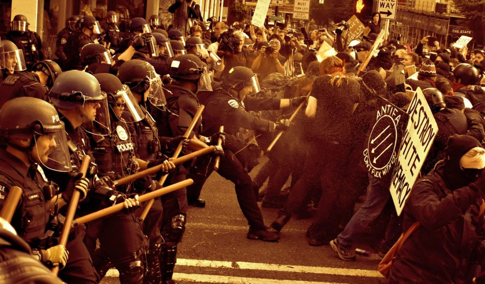

Submitted on Fri, 08/25/2017 - 7:24pm
By the IWW Greater Seattle General Defense Committee Local 24 - It's Going Down, August 18, 2017
The IWW Greater Seattle General Defense Committee (GDC) put a wide-reaching public call-out to amass a significant contingent of individuals and organizations to confront yet another hateful “Freedom” rally by Joey Gibson and Patriot Prayer scheduled for August 13th. Sure enough, the rally was attended by white supremacist groups like Cascade Legion, the self-proclaimed “Western-chauvinist” Proud Boys, Anthony Parish the homophobic street preacher, and many other far-right bigots marching in the name of “free speech”.
This was the third time this year that Joey’s crew descended upon our city to espouse their reactionary prejudices and ethno-nationalist, extreme-right fascist politics in our public space. This is the same crew that rallied with the likes of Jeremy Christian; he is the one who, this May, stabbed three people on a Portland MAX train (murdering two) for standing up against his Islamophobic tirade against two young women.
For this counter-protest, we intended to meet their rally in Westlake Park and confront them where they stood, stop their march, shame them, and disrupt their event. We assigned marshal roles to a small coalition of the GDC and other chosen leftist organizations in order to keep our march safe from outside threats and ensure smooth coordination throughout. Our marshals were specifically trained and practiced for this role.
We didn’t know what our numbers would be, which made it difficult to prepare in advance. We set several tactical goals, planning for numbers as high as 200, but we made fallback plans for fewer. The terrorist attack in Charlottesville on Saturday changed everything, and overnight, the number of attendees for our Sunday march grew exponentially. We suddenly found ourselves side by side with hundreds of people who didn’t necessarily share our objectives and who had a very different understanding of what confronting fascism means.
We marched, because that seemed like the right thing to do. As we got within a two block radius of Westlake Park, The Seattle Police Department, along with Bellevue PD, Tukwila PD, and Renton PD, flanked us and barred our path at every turn towards the direction of the rally. The bloc and other various brave attendees made a break down an alley to cut through, but were met by SPD at the other end – who relentlessly hosed the charge down with pepper spray and stole their banners. The SPD would later re-tweet photos of a seized banner and picket sign handles, calling them “weapons”. One was arrested.
Treated by medics and reconsolidated with the main contingent of the march, we continued together again. Road by road, riot police wielding batons, pepper spray, and grenade launchers lined every intersection’s only entry towards Westlake. We eventually stopped. We waited and amassed before the police. SPD, seemingly threatened after being covered in harmless silly string, responded with pepper spray and even launched blast balls directly into the center of the densely crowded intersection. Another marcher was arrested. One person with a head wound had to be evacuated to Harborview hospital, and many others were treated by medics on the spot. Despite this, SPD officially claimed to the press that there were no injuries.
A call went out that the Westlake rally was over, and that we had won. This call was a miscommunication on our end that ultimately resulted from faulty intelligence that indicated a dispersal order was given at Westlake – and before it could be confirmed, the word eventually morphed down the chain into a story that the fascists left the park early. Nonetheless, the call was given and acted upon. We were turned back to Denny Park. Smaller groups of the bloc attempted to divert down other roads towards Westlake again, only to be stopped. Another arrest was made. Meanwhile, many gleeful activists returned to Denny Park to call it a victory. We do not feel that there was a victory.
While Gibson cancelled the Patriot Prayer march, we weren’t able to confront the fascists at their rally. We were turned away from the only objective we had left. We achieved a goal of not letting them march, but at the cost of the safety of our people. The trust of the committed antifascists who were there that day was betrayed. We were glad to hear that many folks nonetheless managed to make it into Westlake for a confrontation, but only by doing so separately from the larger group. We commend all of their initiative and dedication.
The action attracted people who had no interest in confronting fascism, or any concept of what it means. They wanted a parade. They wanted a parade that obeyed police direction and showed off their 200-foot-long constitution banner. They believed that this was antifascist. It’s almost funny. Fascists love parades, the constitution, and cops.
We failed to plan for the numbers that showed up on Sunday. We chose a tactic that was ineffective. We put people in danger by failing to create a separation between the parade group and the actual antifascist action. We didn’t even understand what was happening until it was too late. We worked with groups that didn’t share the same objectives. We worked with groups that could never possibly share our objectives. We will be much more mindful about this in the future.
Our primary goal was not met. Our people were put in harm’s way. Our marshals were spread thin – straddling two masses at times, doing our very best to ensure that the perimeter was covered adequately. Our marshals and medics were continually distracted from their duties by the loud demands of paraders to police and suppress the antifascists for whom the march was organized. Not only did this compromise the safety of everyone, it created needless conflict between committed antifascists and those who were in over their heads. The actions of those who came for a parade sabotaged the goals of the antifascists and enabled the likes of Patriot Prayer.
We fucked up. It won’t be the last time, but we learned a lot from our mistakes. Over the next few weeks and months we’ll be thinking a lot about what happened and working on ways to improve our strategies.
 Workers at Buyback, a recycling centre in Berkeley, have walked off the job this morning after the payment of their wages was delayed without explanation.
Workers at Buyback, a recycling centre in Berkeley, have walked off the job this morning after the payment of their wages was delayed without explanation. On Saturday August 12th, white nationalists converged on the city of Charlottesville, Virginia to protest the removal of a statue of Robert E. Lee and the renaming of Lee Park to Emancipation Park. The fascists were outnumbered by antifascists and were driven from the park, but not without great cost, as we all know. On that day a fascist drove his car at high speed into the antifascist demonstration, injuring over 20 people and killing one, a 32 year old paralegal named Heather Heyer.
On Saturday August 12th, white nationalists converged on the city of Charlottesville, Virginia to protest the removal of a statue of Robert E. Lee and the renaming of Lee Park to Emancipation Park. The fascists were outnumbered by antifascists and were driven from the park, but not without great cost, as we all know. On that day a fascist drove his car at high speed into the antifascist demonstration, injuring over 20 people and killing one, a 32 year old paralegal named Heather Heyer.